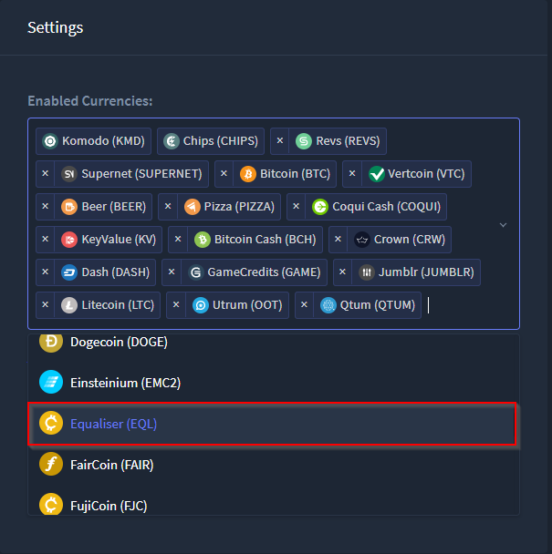
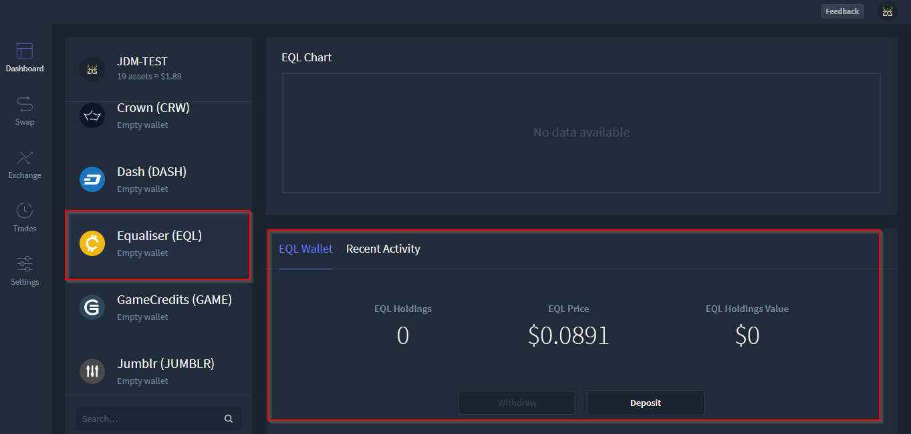
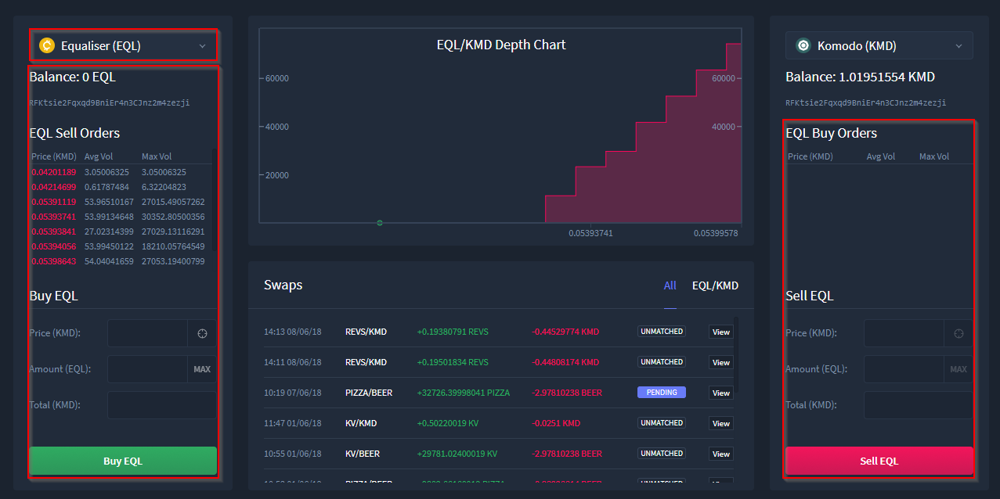
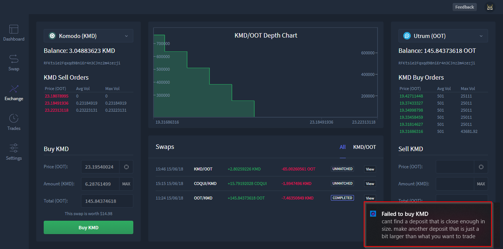
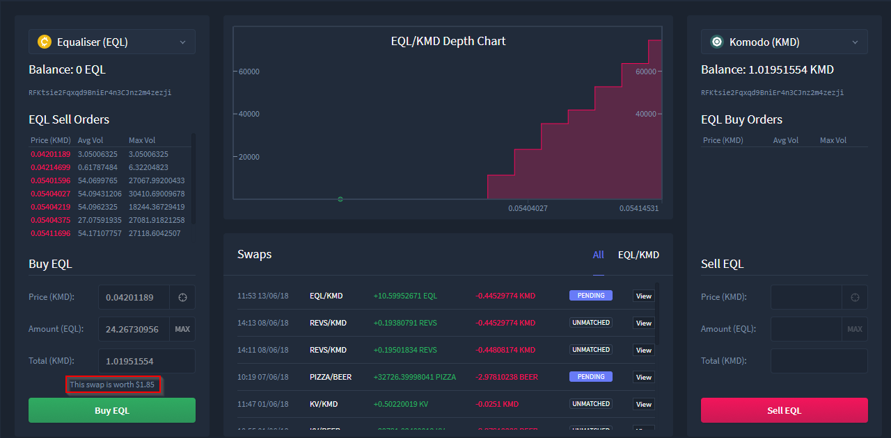
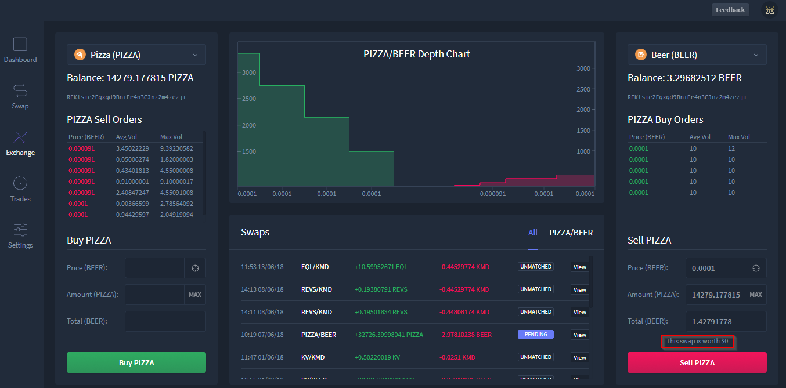
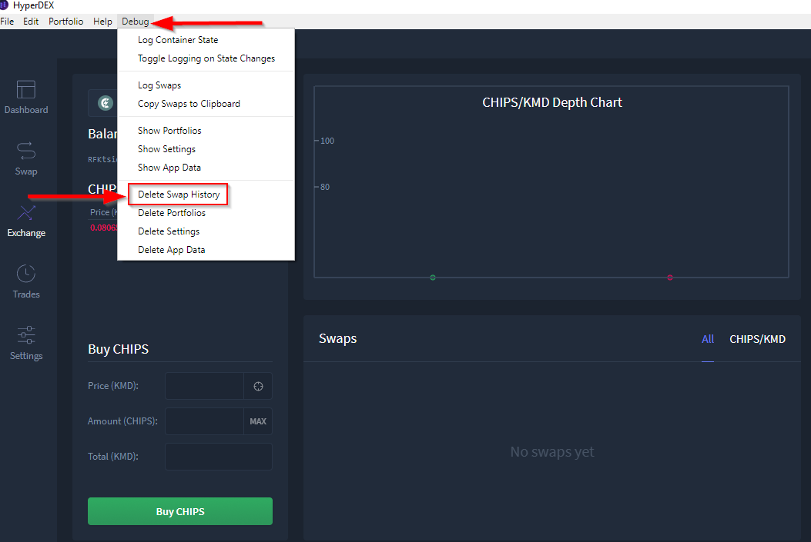

HyperDEX-0.1.0-alpha.6-Enhancements
- Support for the Equaliser (EQL) currency.
- Equaliser (EQL) coin added in Settings view.

- Once added, the
EQL coin will be displayed in your portfolio

- EQL coin available in Exchange view

- Displays order failures using a system notification.
- Order failures with an explanation will now be displayed by the app in the bottom right of the screen

3. Shows the worth of a swap in USD in the order column in the Exchange view. a. Swap worth is displayed above Buy button in the Exchange view

- Swap worth is displayed above Sell button in Exchange view

- Fixed a crash caused by number some inputs having the incorrect data type.
- An error existed during swaps where inputs were sometimes treated as an integer and other times treated as a string. This issue has been resolved and can be referenced in issuue #342
- Now gracefully handles Electrum errors.
- System notifications will now be displayed in place of code errors.
6. Added a debug menu item to delete swap history. a. To delete swap history from the exchange view select the debug menu option then select Delete Swap History

- Updated to BarterDEX Marketmaker v1.0.238
- Marketmaker has now been updated and can be referenced here: Link to Github